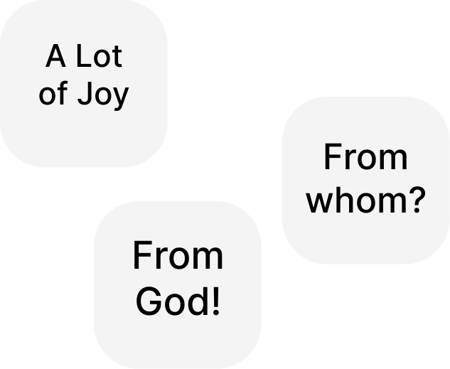

Слава Ісусу Христу!
☀️
Оскільки у праці, опублікованій за посиланням:
https://oleksandr-zhabenko.github.io/uk/commentaries/02082025.html
а ще раніше в інших, опублікованих за посиланнями:
https://churchandsociety.org.ua/pdf/projects/zbirnyk.pdf
https://oleksandr-zhabenko.github.io/uk/commentaries/17082024.html
https://oleksandr-zhabenko.github.io/uk/commentaries/12112025.html
https://oleksandr-zhabenko.github.io/uk/commentaries/27112024.html
написано, що вживання прийменників має важливе значення для правильного розуміння важливих і актуальних питань, зокрема питання влади, то пишу коментарі щодо вживання саме цих прийменників. Як порада щодо читання написаного — можна читати вірш у перекладі чи/та оригіналі (хто має таку змогу), а тоді відповідний коментар щодо прийменників тут. Далі потрібно зрозуміти, якої частини вірша стосується коментар, а також обдумати, що суттєве для розуміння він стверджує — чи рідше — заперечує. Таке вдумливе читання допомагає поглибити розуміння і береже від згаданих помилок.
Важливими творами, які проливають більше світла на цю тему також є наступні:
https://oleksandr-zhabenko.github.io/uk/commentaries/28052026.html
https://oleksandr-zhabenko.github.io/uk/commentaries/16082026.html
Підготував покращений варіант мого дослідження, презентація якого доступна за посиланням:
https://www.facebook.com/Oleksandr.S.Zhabenko/posts/2447150899034358
https://oleksandr-zhabenko.github.io/uk/commentaries/vystup-2025-hypo-genitive-Romans-XIII_1.pdf
Матеріал дослідження англійською мовою опубліковано поки як електронна книга за посиланням:
https://www.lulu.com/shop/alexander-zhabenko/the-new-solo-preposition-approach-on-authority-ideal-authority-and-origins-matthew-v-18-romans-xiii-1/ebook/product-7knj64m.html?page=1&pageSize=4
Один з розділів опубліковано також українською мовою за посиланнями:
https://www.facebook.com/Oleksandr.S.Zhabenko/posts/
https://www.facebook.com/groups/1539152859716654/?multi_permalinks=4308597896105456
Сам список посилань щодо прийменників буду оновлювати за посиланнями:
https://oleksandr-zhabenko.github.io/uk/commentaries/02082025.html
https://oleksandr-zhabenko.github.io/uk/commentaries/Pryjmennyky.html
крайній — раз або двічі на місяць, щоб зберігати актуальною версію тексту і надалі.
Згадки Стронга (прим. за Стронгом) у перекладі оригінального тексту означають, що слово узято зі словника Стронга, а конкретне значення обране після перекладу та коментаря Google Gemini.
Рання:
Про читання з Євангелія дивіться за посиланнями:
https://oleksandr-zhabenko.github.io/uk/commentaries/04102025.html
https://oleksandr-zhabenko.github.io/uk/commentaries/25012025.html
https://www.instagram.com/oleksandr_zhabenko/p/DZ1y6cRDfKX/
https://www.instagram.com/p/C7cDtRjM31O/
https://oleksandr-zhabenko.github.io/uk/commentaries/09022023.html
https://churchandsociety.org.ua/pdf/projects/zbirnyk.pdf
https://oleksandr-zhabenko.github.io/uk/commentaries/30092023.html
Літургія:
1 Тимофія I, 12 — 'εἰς διακονίαν' — 'eis diakonian' - для служби
. Прийменник 'eis' тут вказує на мету дії.
1 Тимофія I, 13 — 'ἀγνοῶν ἐποίησα ἐν ἀπιστίᾳ' — 'agnoon epoiesa en apistia' - нетямущий творив те у невірʼї; не маючий пізнання творив у невірʼї; незнаючий творив невірʼям
. Можливі різні варіанти перекладу, які тут доповнюють один одного. Зверну увагу, що тут цілком очевидно знання і віра ніяк не протиставляються, значною мірою є синонімами, так що незнання і невіра виступають разом як основа злої творчості
, тобто гріховного життя і заглиблення у нього все далі.
1 Тимофія I, 14 — 'τῆς ἐν Χριστῷ Ἰησοῦ' — 'tes en CHristo Iesou' - тими, що у Христі Ісусі
.
Апостол Павло свідчить про те, що Закон Мойсея є добрим, якщо його правильно вживати — найперше для боротьби з гріхом, для викриття у ньому, для пізнання того, що є гріхом. Закон не пише, що є справді праведністю, але значно більше викриває гріхи, так що можна бачити через нього, що є гріхом.
Далі Павло свідчить, що це розуміння від Євангелія, і що він сам став служителем Божим через Божу благодать, бувши раніше у невіданні навіть гонителем.
Більше про читання з Апостола дивіться за посиланнями:
https://oleksandr-zhabenko.github.io/uk/commentaries/02122025.html
https://oleksandr-zhabenko.github.io/uk/commentaries/17122024.html
https://oleksandr-zhabenko.github.io/uk/commentaries/28112023.html
Луки XIV, 28 — 'Τίς γὰρ ἐξ ὑμῶν' — 'Tis gar ex hymon' - Бо хто з вас
. Прийменник 'ek' у його формі перед наступним 'hy' вказує на вибір серед групи. 'εἰς ἀπαρτισμόν' - 'eis apartismon' - у завершення; для завершення
.
Луки XIV, 31 — 'εἰς πόλεμον' — 'eis polemon' - у війну; для війни
. Прийменник 'eis' вказує тут на входження у стан війни, на включення у війну. 'ἐν δέκα' - 'en deka' - у десяти; з десятьма
. Тут йдеться про достатність сили
— сила виступає як оточення військом, десятьма тисячами. Говорить про те, які можливості має кожна людина і скільки — десять тисяч завжди наявні, якщо людина опанує їх, як цар. У силі десяти тисяч
— тоді як натомість ворог з двадцятьма тисячами
— ворог тут не опановує природні сили, але звертає
їх разом з собою на боротьбу.
Дивіться детально на цю тему у моїй книзі Loving Enemies: Why the Creator Is Perfect and You Can Be as Well.
Луки XIV, 33 — 'ἐξ ὑμῶν' — 'ex hymon' - з вас
. Прийменник 'ek' у його формі перед наступним 'hy' вказує на вибір серед групи.
Луки XIV, 34 — 'ἐν τίνι' — 'en tini' - у чому; чим
. За смислом другий варіант перекладу є кращим.
Луки XIV, 35 — 'εἰς γῆν' — 'eis gen' - у землю; для землі
. 'εἰς κοπρίαν' - 'eis koprian' - у гній; для гною
. Тут обидва варіанти можливі, причому перший вказує напрямок викидання, тобто куди викидати, а другий — на те, до чого уподібниться така сіль, з чим буде змішана.
Про вірші 26-27 дивіться щодо паралельного місця у Матфея (Матфея X, 37) за посиланнями:
https://oleksandr-zhabenko.github.io/uk/commentaries/18072026.html
https://oleksandr-zhabenko.github.io/uk/commentaries/26072025.html
https://oleksandr-zhabenko.github.io/uk/commentaries/22072023.html
Про вірш 27 дивіться також щодо Галатів VI, 14 за посиланнями:
https://oleksandr-zhabenko.github.io/uk/commentaries/30082026.html
https://oleksandr-zhabenko.github.io/uk/commentaries/07092025.html
Притчі про будівництво і про царя — особливе передання Луки. Смисл обох притч у тому, що потрібно слідувати за Христом до кінця, неправильним є зупинятися і казати: Ні, далі я не піду
. Також вони навчають свідомості, свідомого прийняття Христа. Притча про сіль навчає зберігати те, що є характерним і важливим для вірних, для християн.
Більше про читання з Євангелія дивіться за посиланнями:
https://oleksandr-zhabenko.github.io/uk/commentaries/02122025.html
https://oleksandr-zhabenko.github.io/uk/commentaries/12112024.html
https://oleksandr-zhabenko.github.io/uk/commentaries/14112023.html
Великомучениці Катерини:
Про читання з Апостола дивіться за посиланнями:
https://oleksandr-zhabenko.github.io/uk/commentaries/13102024.html
https://oleksandr-zhabenko.github.io/uk/commentaries/11072025.html
Про читання з Євангелія дивіться за посиланнями:
https://oleksandr-zhabenko.github.io/uk/commentaries/17062026.html
https://oleksandr-zhabenko.github.io/uk/commentaries/13122025.html
https://oleksandr-zhabenko.github.io/uk/commentaries/03122024.html
https://oleksandr-zhabenko.github.io/uk/commentaries/05122023.html
https://oleksandr-zhabenko.github.io/uk/commentaries/25062025.html
https://oleksandr-zhabenko.github.io/uk/commentaries/06042026.html
Слава Тобі, Боже наш, слава Тобі!
Джерело:
https://oleksandr-zhabenko.github.io/uk/commentaries/24112026.html
~~~~~
Glory Be to Jesus Christ!
🌞
Since in the work published at the link:
https://oleksandr-zhabenko.github.io/en/commentaries/02082025.html
and even earlier in others, published at the links:
https://churchandsociety.org.ua/pdf/projects/zbirnyk.pdf
https://oleksandr-zhabenko.github.io/en/commentaries/17082024.html
https://oleksandr-zhabenko.github.io/en/commentaries/27112024.html
it is written that the use of prepositions has important significance for the correct understanding of important and topical questions, particularly the question of power, I am writing comments regarding the use of precisely these prepositions. As advice regarding reading what is written — one can read the verse in translation or/and original (whoever has such possibility), and then the corresponding comment regarding prepositions here. Then it is necessary to understand which part of the verse the comment concerns, and also to consider what essential for understanding it affirms — or more rarely — denies. Such thoughtful reading helps to deepen understanding and protects from the mentioned mistakes.
Important works that shed light to this topic are the following:
https://oleksandr-zhabenko.github.io/en/commentaries/28052026.html
https://oleksandr-zhabenko.github.io/en/commentaries/16082026.html
I prepared an improved version of my research, the presentation of which is available at the link:
https://www.facebook.com/Oleksandr.S.Zhabenko/posts/
https://oleksandr-zhabenko.github.io/uk/commentaries/vystup-2025-hypo-genitive-Romans-XIII_1.pdf
The research material in English has been published for the time being as an e-book at the link:
https://www.lulu.com/shop/alexander-zhabenko/the-new-solo-preposition-approach-on-authority-ideal-authority-and-origins-matthew-v-18-romans-xiii-1/ebook/product-7knj64m.html?page=1&pageSize=4
One of the chapters has also been published in Ukrainian at the links:
https://www.facebook.com/Oleksandr.S.Zhabenko/posts/
https://www.facebook.com/groups/1539152859716654/?multi_permalinks=4308597896105456
I will update the list of references regarding prepositions at the links:
https://oleksandr-zhabenko.github.io/en/commentaries/02082025.html
https://oleksandr-zhabenko.github.io/uk/commentaries/Pryjmennyky.html
the latter — once or twice a month (in Ukrainian), to keep the text version current and up to date.
Translated from the Ukrainian original using Google Gemini Hydrogen 4 with my consequent editing.
Strong's references (note: according to Strong) in the translation of the original text mean that the word is taken from Strong's dictionary, and the specific meaning was chosen following the translation and commentary by Google Gemini.
Matins:
For the Gospel reading, see the links:
https://oleksandr-zhabenko.github.io/en/commentaries/04102025.html
https://oleksandr-zhabenko.github.io/en/commentaries/25012025.html
https://oleksandr-zhabenko.github.io/en/Do-you-see-birds-lilies-divine-beauty-and-care.pdf
https://www.instagram.com/p/C7cEETLs_QecxWDOPRG4JbYRJ1dpjF3764xa8Q0/
https://oleksandr-zhabenko.github.io/en/commentaries/09022023.html
https://churchandsociety.org.ua/pdf/projects/zbirnyk.pdf
https://oleksandr-zhabenko.github.io/en/commentaries/30092023.html
Liturgy:
1 Timothy I, 12 — 'εἰς διακονίαν' — 'eis diakonian' — into the ministry / for service.
The preposition 'eis' here indicates the goal of the action.
1 Timothy I, 13 — 'ἀγνοῶν ἐποίησα ἐν ἀπιστίᾳ' — 'agnoon epoiesa en apistia' — I did it ignorantly in unbelief; lacking knowledge I acted in unbelief; not knowing I acted by unbelief.
Various translation options are possible here, complementing one another. I will draw attention to the fact that here, quite evidently, knowledge and faith are in no way opposed to one another; to a large extent they are synonymous, so that ignorance and unbelief act together as the foundation of evil creativity
— that is, of a sinful life and sinking ever deeper into it.
1 Timothy I, 14 — 'τῆς ἐν Χριστῷ Ἰησοῦ' — 'tes en CHristo Iesou' — that are in Christ Jesus / those in Christ Jesus.
The Apostle Paul bears witness that the Law of Moses is good if one uses it lawfully — first and foremost for combating sin, for exposing it, and for knowing what constitutes sin. The Law does not prescribe what constitutes true righteousness, yet it far more exposes sins, so that through it one can see what sin is.
Next, Paul testifies that this understanding comes from the Gospel, and that he himself became a minister of God through divine grace, having previously been, in ignorance, even a persecutor.
For more on the reading from the Apostle, see the links:
https://oleksandr-zhabenko.github.io/en/commentaries/02122025.html
https://oleksandr-zhabenko.github.io/en/commentaries/17122024.html
https://oleksandr-zhabenko.github.io/en/commentaries/28112023.html
Luke XIV, 28 — 'Τίς γὰρ ἐξ ὑμῶν' — 'Tis gar ex hymon' — For which of you.
The preposition 'ek' in its form before the following 'hy' indicates selection from among a group. 'εἰς ἀπαρτισμόν' - 'eis apartismon' — to finish it / for completion.
Luke XIV, 31 — 'εἰς πόλεμον' — 'eis polemon' — to make war / into war; for war.
The preposition 'eis' indicates here entering into a state of war, inclusion in war. 'ἐν δέκα' - 'en deka' — with ten / in ten.
Here it concerns sufficiency of strength
— strength appears as an encirclement by an army, by ten thousand. It speaks of what capabilities every person possesses and how many — ten thousand are always present if a person masters them like a king. In the strength of ten thousand
— whereas by contrast the enemy comes with twenty thousand
— here the enemy does not master natural forces, but turns
them along with himself toward struggle.
See in detail on this topic in my book Loving Enemies: Why the Creator Is Perfect, and You Can Be as Well.
Luke XIV, 33 — 'ἐξ ὑμῶν' — 'ex hymon' — of you / from among you.
The preposition 'ek' in its form before the following 'hy' indicates selection from among a group.
Luke XIV, 34 — 'ἐν τίνι' — 'en tini' — wherewith / in what; by what.
In sense, the second translation option is better.
Luke XIV, 35 — 'εἰς γῆν' — 'eis gen' — for the land / into the soil; for the earth.
'εἰς κοπρίαν' - 'eis koprian' — for the dunghill / into the manure; for manure.
Both options are possible here: the first indicates the direction of casting out — that is, where to throw it — whilst the second points to what such salt will come to resemble, with what it will be mixed.
Regarding verses 26-27, see concerning the parallel passage in Matthew (Matthew X, 37) at the links:
https://oleksandr-zhabenko.github.io/en/commentaries/18072026.html
https://oleksandr-zhabenko.github.io/en/commentaries/26072025.html
https://oleksandr-zhabenko.github.io/en/commentaries/22072023.html
Regarding verse 27, see also concerning Galatians VI, 14 at the links:
https://oleksandr-zhabenko.github.io/en/commentaries/30082026.html
https://oleksandr-zhabenko.github.io/en/commentaries/07092025.html
The parables of the tower builder and of the king are a special tradition of Luke. The meaning of both parables is that one must follow Christ to the end; it is wrong to stop and say: No, I will go no further.
They also teach awareness — the conscious acceptance of Christ. The parable of the salt teaches preserving that which is characteristic and essential for the faithful, for Christians.
For more on the reading from the Gospel, see the links:
https://oleksandr-zhabenko.github.io/en/commentaries/02122025.html
https://oleksandr-zhabenko.github.io/en/commentaries/12112024.html
https://oleksandr-zhabenko.github.io/en/commentaries/14112023.html
Of Great Martyr Catherine:
For the reading from the Apostle, see the links:
https://oleksandr-zhabenko.github.io/en/commentaries/13102024.html
https://oleksandr-zhabenko.github.io/en/commentaries/11072025.html
For the reading from the Gospel, see the links:
https://oleksandr-zhabenko.github.io/en/commentaries/17062026.html
https://oleksandr-zhabenko.github.io/en/commentaries/13122025.html
https://oleksandr-zhabenko.github.io/en/commentaries/03122024.html
https://oleksandr-zhabenko.github.io/en/commentaries/05122023.html
https://oleksandr-zhabenko.github.io/en/commentaries/25062025.html
https://oleksandr-zhabenko.github.io/en/commentaries/06042026.html
Glory be to Thee, our God, glory be to Thee!
Source:
https://oleksandr-zhabenko.github.io/en/commentaries/24112026.html